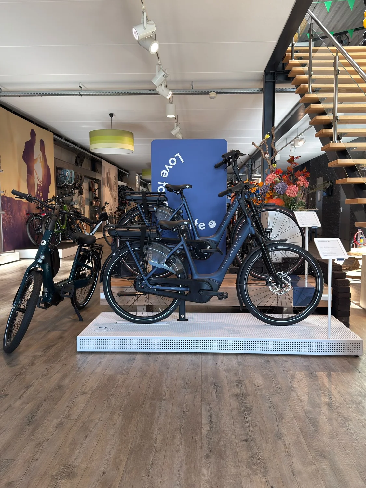

Van comfortabel dagelijks gebruik tot krachtige tour-e-bikes. Bekijk de actuele modellen van Gazelle en kom naar de winkel om het verschil zelf te voelen.

De monteurs houden hun technische expertise op peil met trainingen en bijscholingen voor verschillende e-bike systemen.